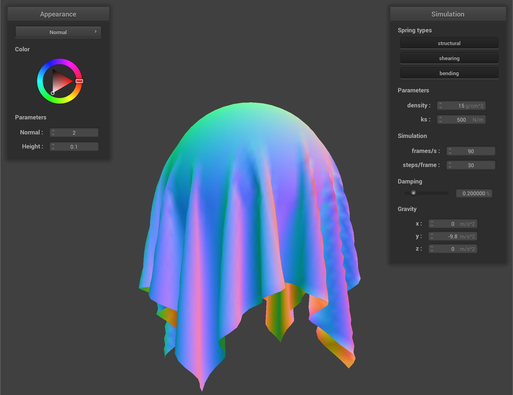
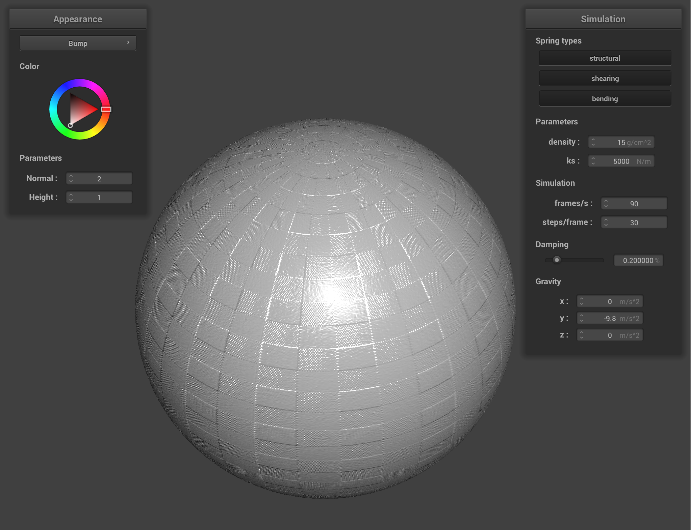

Overview
In this project, I started out by creating a mesh representation of a cloth using point masses and springs. I then added physics into the simulation
in the form of spring and external forces, allowing the cloth to fall while holding itself together. The next step was to implement the cloth's behavior
when colliding with other objects, such as spheres and planes, as well as with itself. Finally, I implemented different shader programs to color our
renderings with different textures. Overall, I relied on a lot of vector direction calculations during programming throughout this project. While I ran
into a few issues here and there, there were no major roadblocks.
For all renderings in this assignment, the default parameters used are density = 15 g/cm2, ks = 5000 N/m, damping = 0.2%, normal = 2, and
height = 0.1, if not indicated otherwise.
Part 1: Masses and Springs
|
Img 1: pinned2.json, vertical view
|
Img 2: pinned2.json, horizontal view
|
|
Img 3: pinned2.json, no shearing springs
|
Img 4: pinned2.json, only shearing springs
|
Img 5: pinned2.json, all spring types
|
In this part, we modeled the structure of a cloth using point masses and springs. The lines in the above images represent springs of different types that
connect the point masses together. To generate the point masses, I used a double for loop with the provided width/height values and the number of
width/height points to add evenly spaced masses to the point mass vector. To add the structural, shearing, and bending springs, I used another for loop
to loop through the point mass vector and create a spring appropriately. Since the point mass vector is one dimensional, I used offsets during indexing
into the vector to obtain the correct points that would be above, to the left of, and diagonal to the current point mass in a grid. To account for the
edges of the grid mesh, I used if statements and modulos to check if a point mass existed at either of the four edges and adjusted spring creation
accordingly. One problem that I ran into during implementation was that my mesh was abnormally large, and I could not zoom out to see the entire mesh like
shown in the spec. I discovered that this was due to the fact that I had ignored the width and height values provided to us and had been creating the
point masses too far apart.
Part 2: Simulation via Numerical Integration
In this part, we implemented the forces acting on each of the point masses by gravity and the springs. To start, I used a for loop to accumulate all the
external forces, such as gravity, into the force vector. I then used another for loop to loop through the vector of springs and appropriately added the
force contributions from each to the point masses. This was done by calculating the magnitude of the force using Hooke's law, calculating the vector
direction from one point mass to the other, and applying the force in this direction. The force was also equally applied to the point masses in the exact
opposite direction. With the total forces being applied to each point mass, I then implemented position updates using Verlet integration. I looped through
each of the point masses and used the provided equation to update their positions as long as they were not pinned. Finally, I constrained position
updates by limiting the spring's length to 10% above its rest length. To do so, I used another loop through the springs and calculated the distance
between the point masses at the ends of each spring. If any were greater than 1.1 times the rest length, I corrected the point mass positions by
calculating a correction distance using the rest length/current distance and applying it to the two point masses equally to move them towards each other.
The only problem I ran into during the implementation of this part was that I initially struggled with applying forces in the directions between point
masses. However, once I realized I could use vector calculations to obtain this direction vector, the implementation became straightforward.
|
Img 2: pinned2.json, ks = 10 N/m
|
Img 3: pinned2.json, ks = 100000 N/m
|
Image 2 above shows the cloth with a low ks, while image 3 shows the cloth with a high ks. A low spring constant indicates that the forces exerted by the
springs are lower, leading to the cloth appearing more saggy. There are more wrinkles at the top of the cloth and artifacts of wrinkles are visible at
the bottom corners. The opposite is true with a high spring constant. The cloth is much flatter and more uniform with less wrinkling at the top due to
the higher spring forces holding the mesh together more rigidly.
|
Img 4: pinned2.json, density = 1 g/cm2
|
Img 5: pinned2.json, density = 500 g/cm2
|
Image 4 above shows the cloth with a low density, while image 5 shows the cloth with a high density. A low density has the same effect as a high spring
constant. By decreasing the density of the point masses, the forces required to to hold them together decrease as force involves a calculation with mass.
This causes the cloth to be more uniform with less wrinkling at the top. A high density has the opposite effect where the heavier point masses require
more force to hold together and counteract the force of gravity. As such, this leads to the cloth appearing more saggy with more wrinkling present
throughout.
|
Img 6: pinned2.json, damping = 0
|
Img 7: pinned2.json, damping = 1
|
Image 6 above shows the cloth with a low damping factor, while image 7 shows the cloth with a high damping factor. Both screenshots are taken while the
cloth is moving towards a resting state. With a low damping factor, the movement of the cloth is much quicker and more erratic. This is because less
damping means there is more freedom for the springs to fully exert their forces on the point masses, leading to a cloth with more waves/wrinkles as each
point mass is pulled in several directions. Additionally, with a low damping factor, the point masses take a much longer time to come to rest, since the
damping factor is what simulates loss of energy in a real world setting. With a higher damping factor, the movement of the cloth is slower and more rigid
since the springs are exerting less force on the point masses. With the equation used in this part, the damping is also applied to the force of gravity
(this is normally not the case), which explains why the cloth falls slower.
|
Img 8: pinned4.json, final resting state
|
Part 3: Handling Collisions with Other Objects
In this part, we implemented cloth collisions with spheres and planes. For sphere collision, I used a for loop through the point masses to check whether
any of them intersected or were within the sphere. To do so, I calculated the distance between the point mass and the origin of the sphere and checked if
this value was less than the radius. If it was, I corrected the position of the point mass by moving the final position to be at the surface of the
sphere. This was done by calculating direction vectors to move the point mass along a certain direction and scaling by a friction factor. For plane
collision, I followed a similar approach with a for loop through the point masses to check for intersections. I calculated the direction vector from the
provided plane point to the point mass and found the dot product of this vector with the plane normal vector to obtain the cosine angle of the two
vectors. If this dot product was less than or equal to 0, this told me that the angle between the two vectors is created with a point that is either on
or below the plane. In this case, I calculated the final position by using the surface offset value to offset the tangential position in the direction
of the last position of the point mass from the plane. One issue I ran into in this part was during plane intersection implementation. I had originally
tried to use a ray tracing approach to calculate the plane intersection positions, but ran into the issue of the cloth immediately being updated to be
on the plane in the first time step. To fix this, I moved towards the vector angle comparison method to allow for checking of the position of the point
mass at each time step.
|

Img 1: sphere.json, ks = 500 N/m
|
Img 2: sphere.json, ks = 5000 N/m
|
Img 3: sphere.json, ks = 50000 N/m
|
Image 1 above shows the cloth with a ks value of 500 N/m, image 2 shows the cloth with a ks of 5000 N/m, and image 3 shows the cloth with a ks value of
50000 N/m. At the lowest spring constant value, the cloth is the saggiest with the cloth stretching farther down below the sphere and the cloth
conforming more to the shape of the top of the sphere. At the moderate spring constant value, the cloth sags less and holds more of its shape at the top
of the sphere. At the highest spring constant value, the cloth is the most rigid, conforming less to the shape of the sphere and appearing to hover
against gravity. The reasoning for this behavior is the same as described in part 2. With a larger spring constant value, the springs exert more force on
the point masses. This holds them together more rigidly, leading to a less flexible cloth.
|
Img 4: plane.json, peacefully at rest
|
Part 4: Handling Self-Collisions
|
Img 1: selfCollision.json, frame 1
|
Img 2: selfCollision.json, frame 2
|
|
Img 3: selfCollision.json, frame 3
|
Img 4: selfCollision.json, frame 4
|
In this part, we implemented self collisions for the cloth. To start, I used a for loop to loop through the point masses and hash them to the closest 3D
volume box represented by a volume of (3 * width / num_width_points) x (3 * height / num_height_points) x max(3 * width / num_width_points, 3 * height /
num_height_points). My hash function divided each axis of the original position by the corresponding axis value of the 3D volume box to obtain the scaled
position of the point mass. These values were then rounded, scaled by a constant, and added together to obtain a unique hash value to represent which
box this point mass belongs in. With the hash map built, I moved on to implementing self collision corrections by looping through each point mass in the
cloth and checking for collisions with all the other point masses that share the same hash. I use the distance formula to calculate the distance between
the point mass and a candidate point mass and assess whether the value is less than 2 * thickness. If it is, a correction vector is calculated in the
direction from the candidate mass to the point mass, and this vector is aggregated into a total correction vector. The average of this correction vector
is then scaled and used to obtain the final position of the point mass. There were no conceptual issues in this part, but it did take me some time to
correctly build the hash map because I struggled with pointer referencing/dereferencing while looping through the map.
|
Img 5: selfCollision.json, ks = 100 N/m, frame 1
|
Img 6: selfCollision.json, ks = 100 N/m, frame 2
|
|
Img 7: selfCollision.json, ks = 10000 N/m, frame 1
|
Img 8: selfCollision.json, ks = 10000 N/m, frame 2
|
Images 5 and 6 above show 2 frames of cloth self collision with a low ks value, while images 7 and 8 show 2 frames of cloth self collision with a high ks
value. With a low spring constant, the cloth exhibits more erratic wrinkling and a more scrunched up resting position. With a higher spring constant, the
cloth exhibits longer more uniform wrinkles and a flatter resting position. This is because the higher spring constant keeps the springs stiffer and
makes the cloth more rigid.
|
Img 9: selfCollision.json, density = 1 g/cm2, frame 1
|
Img 10: selfCollision.json, density = 1 g/cm2, frame 2
|
|
Img 11: selfCollision.json, density = 500 g/cm2, frame 1
|
Img 12: selfCollision.json, density = 500 g/cm2, frame 2
|
Images 9 and 10 above show 2 frames of cloth self collision with a low density value, while images 11 and 12 show 2 frames of cloth self collision with
a high density value. At low density, the springs are able to keep the point masses together with less force, so the cloth has more uniform wrinkling
and appears more rigid. At high density, the point masses have more mass, so the springs cannot keep the cloth as rigid. As such, the cloth exhibits
much smaller wrinkles and a scrunching behavior. The low density cloth has more of a defined shape than the high density cloth.
Part 5: Shaders
In this part, we implemented vertex and fragment shaders. Shader programs in general work to ease the workload of the CPU by running parallel shading
processes on the GPU. Vertex shaders operate on the vertices of a rendering to calculate properties of vertices like their positions as well as their
normal vectors. Additionally, they can write other variables that will be used by fragment shaders. Fragment shaders operate on fragments of the
rendering, which in this part we think of as pixels, calculating color values for them. The input to fragment shaders come from the vertex shaders
and include values like the normal of and (u, v) coordinates of a vertex. By modifying the equations used in the fragment shaders, we can generate
different lighting and texture effects in our renderings, such as diffuse shading and bump mapping.
To implement the shaders, I directly translated the provided equations for the different lightings and textures to their corresponding vert and frag
files. Some extra calculations had to be done within these files, such as calculating the r value with the distance formula. Additionally, one
important aspect of this process was to ensure that the vectors being used were normalized and that this normalization was done with a 3D vector
instead of a 4D vector. This involved a lot of translating between vector types. Overall, the implementation of this part was pretty straightforward,
especially the texture and mirror shading sections as they just involved sampling from a texture map and reflecting about a vector (for mirror shading).
The most difficult section was the displacement mapping section because I struggled for a bit on understanding which components were in world versus
model space.
|
Img 1: sphere.json, ambient only
|
Img 2: sphere.json, diffuse only
|
Img 3: sphere.json, specular only
|
|
Img 4: sphere.json, full Blinn-Phong model
|
Blinn-phong shading is a method of specular shading, as seen in image 3, that uses the half vector of the incoming light vector and outgoing view vector,
light intensity, and a specular coefficient to calculate the specular reflection. By adding this specular shading to contributions from ambient shading,
as seen in image 1, and diffuse shading, as seen image 2, we obtain a full Blinn-Phong reflection model, as seen image 4. In the equation for Blinn-Phong
shading, the parameters used were ka= 0.1, kd= u_color, ks = 0.5, Ia = (1, 1, 1), and p = 100.
|
Img 5: sphere.json, custom texture
|
|
Img 6: sphere.json, bump mapping, sphere, normal = 2, height = 1
|
Img 7: sphere.json, bump mapping, cloth, normal = 2, height = 1
|
|
Img 8: sphere.json, displacement mapping, sphere, normal = 100, height = 0.02
|
Img 9: sphere.json, displacement mapping, cloth, normal = 100, height = 0.02
|
Images 6 and 7 above show the sphere and cloth rendered with bump mapping, while images 8 and 9 show the sphere and cloth rendered with displacement
mapping. Both bump and displacement mapping are techniques of applying textures, but they differ in that bump mapping simply provides an illusion of
texture while displacement mapping actually moves the positions of the cloth to create texture. In bump mapping, a texture map and height function is
used to calculate the normals to be used in shading calculations. In displacement mapping, this same process occurs, but the positions of the vertices
themselves are also changed by displacing them according to the same texture map and height function. In the bump map rendering, it is apparent that
the cloth is still smooth. However, in the displacement map rendering, there are clear bumps on the sphere and cloth. These differences are especially
visible at the edges and folds of the sphere and cloth.
|
Img 10: sphere.json, bump mapping, -o 16 -a 16, normal = 2, height = 1
|
Img 11: sphere.json, displacement mapping, -o 16 -a 16, normal = 2, height = 1
|
|

Img 12: sphere.json, bump mapping, -o 128 -a 128, normal = 100, height = 0.02
|
Img 13: sphere.json, displacement mapping, -o 128 -a 128, normal = 100, height = 0.02
|
Images 10 and 11 above show the sphere rendered with a lower resolution, while images 12 and 13 show the sphere rendered with a higher resolution. When
comparing the bump map images, the most noticeable difference is that the higher resolution sphere has much smoother lines. This is especially apparent
near the top of the sphere where the lower resolution results in jagged/crooked lines that are not apparent at higher resolution. For displacement
mapping, the previously mentioned jagged/crooked lines are once again visible at the lower resolution. Additionally, at higher resolution, the actual
texture on the sphere is more pronounced. There is darker shading where the indents of the texture should exist, indicating a more successful displacement
mapping. Furthermore, in both mappings, the sphere itself is rounder at higher resolution.
|
Img 14: sphere.json, mirror, sphere
|
Img 15: sphere.json, mirror, cloth
|